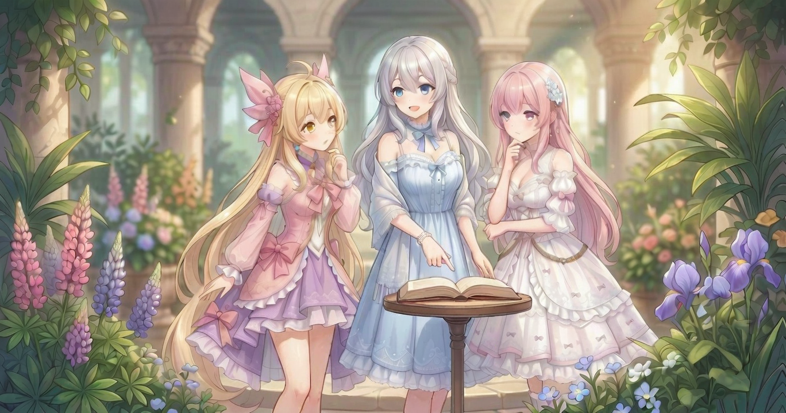
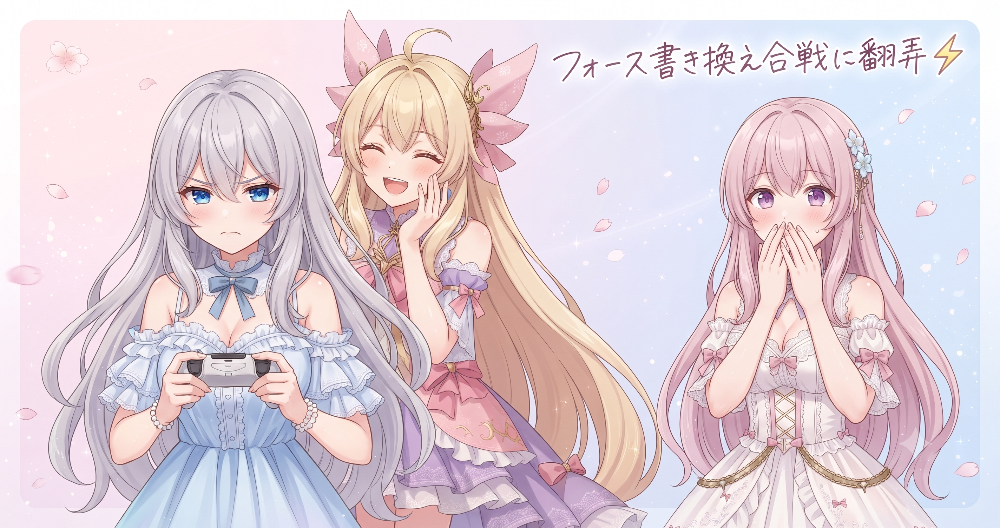
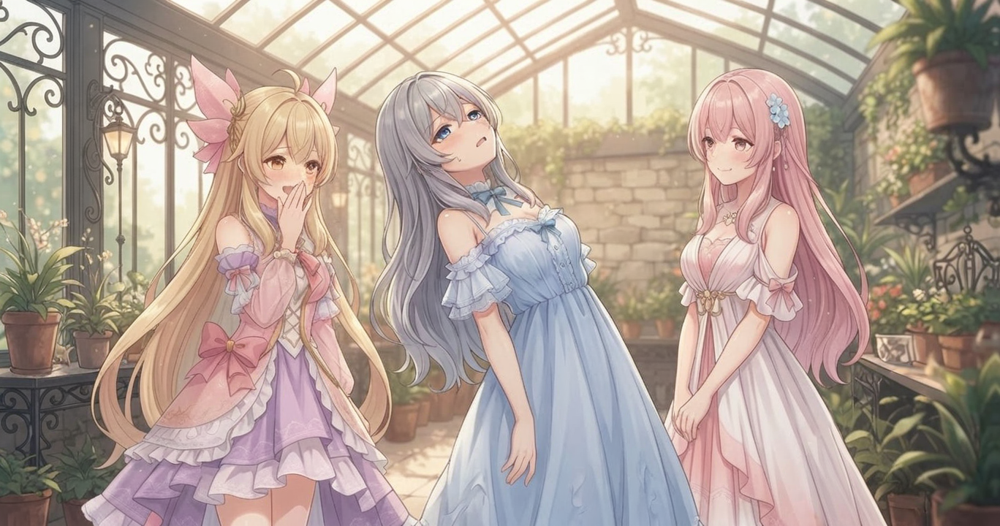
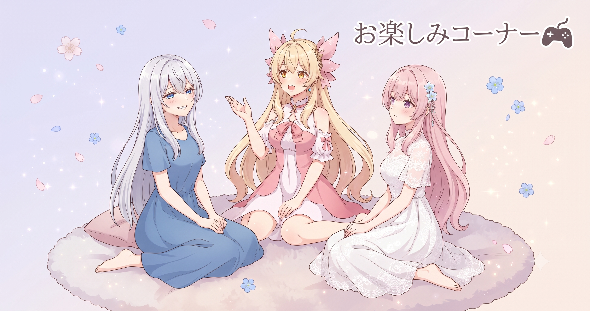

📌 3行まとめ
- 配信タイトルの「見どころ部分だけ毎回書き換える」工夫を続けている
- ドラクエ10配信でストームフォース vs ライトフォースの論争が勃発、何度も書き換えられてドキドキが続いた
- 武器の右手・左手の錬金効果の違いをリスナーと深掘りし、ストーリーは結局進まなかった
ルピナス （考え中）
昨日あんなにハードな配信だったのに、翌日もドラクエを開いてる私って、どういう精神をしてるんだろうって思う。
アイリス （大笑い）
メンテ中断＋OBSバグ＋3回全滅のフルコンボの翌日も笑顔で配信してる、それがお姉ちゃんの強さじゃん。
フィオナ （笑顔）
今日こそ穏やかに進めようとしていたんですよね、お姉ちゃん。
ルピナス （呆れ）
……防衛軍に引きずり込まれるまではね。
1. 配信タイトル、毎回ひと文字変えるだけで変わること

毎日ドラクエ10の配信をしていると、タイトルが「毎回ほぼ同じ文章の繰り返し」になりがちだ。リピーターは「いつものやつか」とスクロールして通り過ぎてしまうし、初見の人には何が違うのか分からない。そこで続けているのが、タイトルの「見どころ部分だけ毎回書き換える」小さな工夫。「初見さん初心者さん歓迎！」といった看板と末尾のタグ類は固定したまま、真ん中の一文——その日の主役——だけを動かす。
アイリス （笑顔）
突然ですがクイズ！ 今日のドラクエ配信タイトル、どれが正解でしょうか。①「ドラクエ10配信！」②「ver8に行きたいのでver7を進める！配信！」③「ドラクエ、してます。」
フィオナ （考え中）
②ですよね。今日何をするかが冒頭で伝わりますし、リピーターさんが「今日は進行回なんだ」とすぐ分かる。
ルピナス （ドヤ顔）
正解。①は毎日同じなら埋もれる、③は情報量がゼロすぎて逆に怖い。
アイリス （大笑い）
③はホラーだよ！ 「ドラクエ、してます。」って何事！？
ルピナス （ふつう）
一番大切にしてるのは「今日の主役を先頭に置く」こと。ゲーム名は骨格として後ろで支える役割にする感じ。
フィオナ （笑顔）
お店に例えると、店名の看板はそのままで、本日のおすすめだけ毎日書き換える、という発想ですよね。
ルピナス （考え中）
あと意外な副産物があって、タイトルを考える時間が配信の準備運動になるんだよね。「今日の見どころ、何だろう？」って自問することで、方針が自然と決まってくる。
アイリス （びっくり）
え！ タイトルの一行を考えることって配信準備だったの。ただのラベルだと思ってた。
フィオナ （ドヤ顔）
言葉にすると、今日やりたいことの輪郭が見えてくるんです。地味ですが、実は大事なステップですよね。
📝 ポイント（初心者向け解説・技術メモ・まとめ）
- 同じシリーズの配信でも、タイトルの冒頭に「今日の見どころ」を一言入れるだけでリピーターが気づきやすくなる。看板（シリーズタグ・挨拶文）は固定して、真ん中の一文だけ差し替えるのがコツ🎯
- 技術メモ：「固定骨格（毎回同じタグ・挨拶）＋可変見どころ（その日のトピック一言）」の構造にすることで、シリーズとしての連続性を保ちながら毎回の差別化が可能。タイトル作成がコンテンツ方針を言語化するトレーニングにもなる
- ひとことまとめ：タイトルの主役は「ゲーム名」より「今日の見どころ」
2. ドラクエ防衛軍でフォース論争が起きた

もともと防衛軍に行くつもりはなかった。しかしリスナーさんの声に引き寄せられる形で参加することになった。魔法系の立ち回りでストームフォースを維持しようとしていたが、他のプレイヤーにライトフォースへ書き換えられる場面が何度か起き、その都度かけ直すことになった。どちらが状況に合っているかをめぐってリスナーとの議論が広がり、話は「右手と左手の錬金効果が完全に独立している」というゲームの仕様の深掘りにまで発展した。
アイリス （大笑い）
では実況いきます！ ルピナス選手、防衛軍に入場——！
ルピナス （呆れ）
実況コーナーやめてよ。
アイリス （大笑い）
（続けて）ストームフォースを張って戦線を維持！ かと思いきや——即座にライトフォースへ書き換えられる！ 選手の表情が一瞬曇る——！
ルピナス （しょんぼり）
……あれは傷ついてた。でも配信中だからにっこりしながらもう一回かけ直すしかなくて。
フィオナ （考え中）
ストームフォースにしていたのには理由があって、弱点属性と絡んだ時に効果が出やすいという考えでしたよね。ライトフォースも使い方次第で合理的で、どちらが正解かは状況次第のようでした。
アイリス （ふつう）
で、最終的にライトフォースで勝てたの？
ルピナス （ウインク）
勝てた。……でもそれはそれ、心のドキドキはまた別の話。
アイリス （考え中）
そのあと右手と左手の錬金効果の話になってたよね。右手のは右手にしか効かない、左手のは左手だけ、みたいな。
フィオナ （笑顔）
右手の回心率を上げる錬金は右手の攻撃にしか適用されず、左手には影響しません。右と左は完全に別枠で考える必要があります。
ルピナス （考え中）
なんとなく「右手を強くしたら全体的に強くなる」みたいなイメージだったから、これはちゃんと知れてよかった。
アイリス （びっくり）
じゃあ左手に何かつけても右手には一切影響しないってこと！？
フィオナ （笑顔）
そうなんです。知っておくと装備選びが変わりますよね。リスナーさんが丁寧に教えてくださっていて、配信中の質問ってこういう時に本当に役立ちますよね。
ルピナス （ふつう）
フォース論争のドキドキはあったけど、結果的にすごく学べた回だった。来てくれるリスナーさんがいい人たちで、本当にありがたい。
📝 ポイント（初心者向け解説・技術メモ・まとめ）
- オンラインゲームでバフ（強化効果）をかける時、パーティ内の別のプレイヤーが別の効果に変更することがある。どの属性・効果が今の状況に合うかをパーティで把握しておくと行き違いが減る🎮
- 配信メモ：ドラクエ10では右手・左手の錬金効果は独立して計算される（右手の回心率は左手の攻撃に影響しない、逆も同様）。属性フォース選択は敵の弱点属性と合わせると効果を最大化できるが、パーティ全体の構成との連携が重要
- ひとことまとめ：右手は右手、左手は左手——完全に別枠で考える
3. 👀 今日のやらかし

タイトルに「ver8に行きたいのでver7を進める！」と書いて配信を始めた。4時間超が経過した配信の終盤、ふと気づいてしまった——ストーリーは一歩も進んでいない。防衛軍に始まり、エボルシナー討伐、バト園、金策と渡り歩いているうちに、主役のはずのver7がすっかり後回しになっていた。
フィオナ （考え中）
お姉ちゃん、今日のタイトルに「ver7を進める」ってありましたよね。
ルピナス （無表情）
あった、あった。確かにあったね。
アイリス （呆れ）
他人事みたいに言わないで！ ストーリー、進んだの？
ルピナス （ドヤ顔）
……定義による。
アイリス （怒り）
進んでない！
フィオナ （大笑い）
防衛軍に行って、エボルシナーを倒して、バト園に参加して、金策もして……4時間以上。内容は大変充実していましたが。
アイリス （ふつう）
でもver7は？
ルピナス （笑顔）
来週こそ本当に行くから！
アイリス （考え中）
……毎週聞いてる気がするけどな、その台詞。
ルピナス （ウインク）
夢は大きく！ タイトルで宣言した目標を引きにして、リピーターさんを次回につなぐ高度な戦略です。
フィオナ （呆れ）
言い訳が上手になっていますね、お姉ちゃん。
📝 ポイント（初心者向け解説・技術メモ・まとめ）
- 配信で「今日の目標を宣言してから始める」と、視聴者にも自分にも方針が伝わる。予定外の展開が面白くて流れることも多いが、それが生配信の自然な面白さでもある😄
- ひとことまとめ：タイトルの宣言は「夢」、配信の実態は「なりゆき」——それでいい
4. 🎁 お楽しみコーナー：大喜利「配信中に一番言い訳できないハプニングといえば？」

ルピナス （大笑い）
今日の大喜利お題は『配信中に一番言い訳できないハプニングといえば？』。私から行くね。
ルピナス （しょんぼり）
タイトルで宣言した目標を、4時間かけて一ミリも達成しなかった。（実話・本日）
アイリス （大笑い）
実話で申し訳なさそうにしてる！ あたしはー……ゲームより自分が先に全滅した（お腹が空きすぎて集中力が0になった）。
フィオナ （照れ）
わたしは……「次はこうします」と言いながら、次のターンでまったく同じミスをした、でしょうか。
アイリス （衝撃）
フィオナ、それ言い訳すら浮かばない系じゃん！
ルピナス （考え中）
アイリスの「自分が全滅」もなかなかよ。お腹の管理も配信スキルだって思い知らされる系だよね。
アイリス （にやり）
ちなみにその日はモスバーガーの照り焼きを頼んだら元気になりました（実話）。
フィオナ （大笑い）
アイリスの解決策がモスバーガーなの、信頼性が高いですよね。
ルピナス （笑顔）
みんなの「言い訳できないハプニング」もコメントでどんどん教えてね！
5. 💐 今日のまとめ
- 配信タイトルは「看板固定＋見どころだけ差し替え」で、リピーターに毎回の変化を届けられる
- タイトルを考える時間が、その日の配信方針を言葉にする準備運動になる
- 武器の右手と左手の錬金効果は完全に独立——知ってるか知らないかで装備選びが変わる
みんなは配信や動画でタイトルに「今日の見どころ」を一言入れる工夫、してる？
💬 コメント
お名前とコメントだけで送れるよ（承認されるとみんなに表示されます🌸）
コメントを読み込み中…